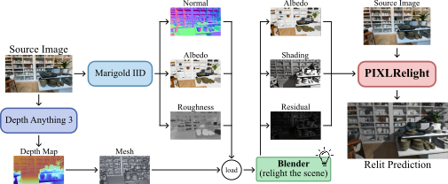
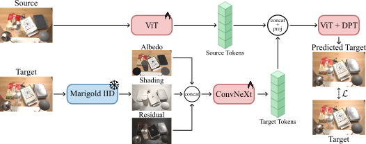

Move your cursor across the image to reposition the light. Use the scene buttons to switch scenes, and the light buttons to switch between flash and spotlight.
We present PIXLRelight, a feed-forward approach for physically controllable single-image relighting. Existing methods either provide limited lighting control (for example through text or environment maps), accumulate errors when chaining inverse and forward rendering, or require costly per-image optimization. Our key idea is to bridge physically based rendering (PBR) and learned image synthesis through a shared intrinsic conditioning that can be obtained from either real photographs or PBR renders. At training time, paired multi-illumination photographs are decomposed into albedo, diffuse shading, and non-diffuse residuals, which condition the model. At inference time, the same conditioning is computed from a path-traced render of a coarse 3D reconstruction of the input under user-specified PBR lights. A transformer-based neural renderer then applies the target illumination to the source photograph, preserving fine image detail through a per-pixel affine modulation. PIXLRelight enables arbitrary PBR-style lighting control, achieves state-of-the-art relighting quality, and runs in under a tenth of a second per image.


Drag the slider in each panel to compare our result against prior work and a path-traced render. Use the scene buttons to change scene.
@article{farinha2026pixlrelight,
title = {PIXLRelight: Controllable Relighting via Intrinsic Conditioning},
author = {Farinha, Miguel and Clark, Ronald},
booktitle = {arXiv preprint},
year = {2026}
}